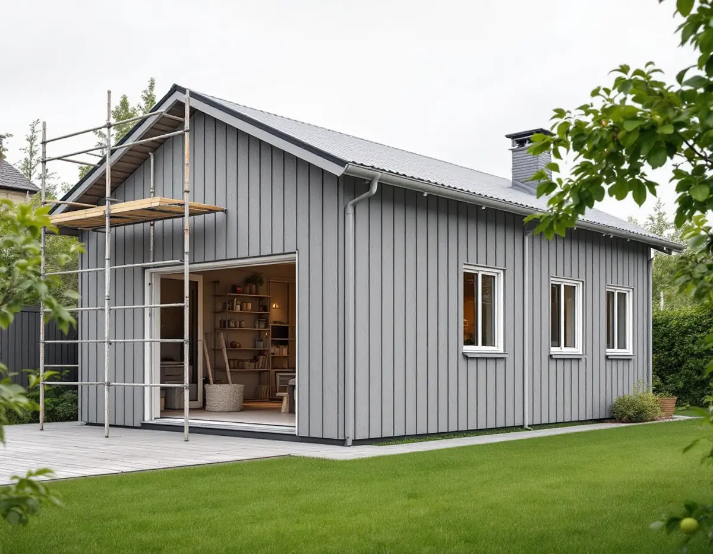
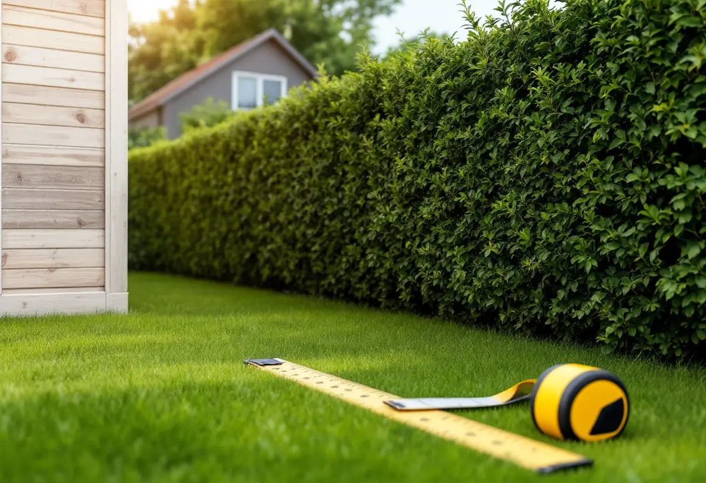

Mätning
Byggnadsarea, nockhöjd, avstånd till gräns och övriga byggnader på tomten.
Många tomter har redan ett garage, en ateljé eller ett stort förråd som skulle kunna bli en bostad. I Järfälla, liksom i resten av landet, går det sedan december 2025 att göra om en sådan byggnad till ett komplementbostadshus utan bygglov – om vissa villkor är uppfyllda. Geal Entreprenad AB bygger nytt och bygger om, och börjar med att mäta det som redan står där.

Plan- och bygglagen kräver normalt bygglov när en byggnad tas i anspråk för ett väsentligen annat ändamål. Men enligt 9 kap. 16 § krävs inget bygglov för att ändra en komplementbyggnad till ett komplementbostadshus, om det färdiga huset uppfyller måtten för ett lovfritt komplementbostadshus. Järfälla kommun har med åtgärden i sin lista över vad som kan vara bygglovsbefriat.
Måtten är desamma som för ett nytt hus: inom detaljplan högst 30,0 kvadratmeter byggnadsarea och 4,0 meter till nocken, mindre än villan och inom en gemensam pott på 45,0 kvadratmeter för tomtens lovfria komplementbyggnader. Ett garage på 35 kvadratmeter kan alltså inte bli en lovfri bostad som det står. Vid platsbesöket mäter vi byggnaden utvändigt och går igenom stommen, grunden och taket, eftersom en bostad ska klara krav som ett förråd inte behöver uppfylla.

Gamla förråd och garage står ofta nära tomtgränsen. Det spelar roll när användningen ändras. Enligt 9 kap. 34 § krävs bygglov närmare gränsen än 4,5 meter, eller inom 30,0 meter från ett järnvägsspårs mitt, även för en sådan ändring som avses i 16 §. Bygglovet behövs inte om de berörda grannarna skriftligen har medgett åtgärden.
Järfälla kommun skriver att grannemedgivanden måste vara skriftliga och påminner om att närhet till gräns, järnväg, totalförsvar eller kulturmiljö kan kräva bygglov även för annars lovfria åtgärder. Vi ritar in avstånden på en situationsplan som grannen kan skriva under, och den sparar du tillsammans med husets övriga papper.
Kommunen lyfter två saker som är lätta att missa. Lovfria åtgärder får inte strida mot skyddsbestämmelser i detaljplanen som gäller markförorening, olyckor, översvämning eller erosion. Och åtgärder som inte är undantagna från att följa planen får göras med en avvikelse bara om den är liten och inte motverkar planens syfte.
Kommunen skriver också att du som fastighetsägare själv ansvarar för att följa lagstiftningen och alla förutsättningar för din fastighet, och att anmälan och startbesked kan krävas om åtgärden innebär väsentliga ändringar av brandskydd, bärande konstruktion, vatten, avlopp eller ventilation. För en ombyggnad till bostad gäller det ofta flera av dem. Vill du ha ett beslut i förväg kan du söka frivilligt lov, vilket kommunen beskriver som en trygghet inför en större investering.
Kommunen äger normalt VA-ledningarna i allmän mark fram till förbindelsepunkten, som brukar ligga vid eller strax utanför fastighetsgränsen. Därefter ansvarar fastighetsägaren för ledningarna, för läckor och stopp och för att vattenmätarplatsen uppfyller kommunens krav. I vissa områden ägs ledningarna efter förbindelsepunkten av en samfällighet, och ibland går en grannes ledningar över tomten med ett servitut.
Innan vi drar nya ledningar till det blivande komplementbostadshuset tar vi reda på vilket av fallen som gäller. Det avgör var ledningarna kan anslutas och vem som behöver tillfrågas. Om villornas tak i kommunen kan du läsa under takbyte i Järfälla, och om större byggprojekt under byggföretag i Järfälla. Lagens mått finns i reglerna för attefallshus.
Byggnadsarea, nockhöjd, avstånd till gräns och övriga byggnader på tomten.
Grund, stomme och tak bedöms mot kraven för en bostad.
Skyddsbestämmelser och eventuella avvikelser i detaljplanen kontrolleras.
Brandskydd, bärande delar, VA och ventilation anmäls vid behov.
Isolering, installationer, kök och badrum fram till nyckelfärdigt.
Bostaden används när slutbeskedet har kommit.
Skatteverket ger inget rotavdrag för att bygga ett helt nytt hus, en friggebod, ett garage eller en liknande fristående byggnad, och inte för bygglovshandlingar eller arkitekt. Samtidigt skriver Skatteverket att komplementhus som garage och förråd kan höra till småhuset, och för att bygga om ska bostaden vara äldre än fem år och större delen av den ursprungliga stommen behållas.
Vilka delar av just din ombyggnad som kan ge avdrag reder vi ut innan kostnadsförslaget skrivs. Avdraget är högst 30 procent av arbetskostnaden och högst 50 000 kronor per person och år.
Om den befintliga byggnaden kan behållas eller behöver nya delar, isolering och fönster, kök och badrum, avståndet till ledningarna och om brandskyddet mot villan behöver förstärkas. Efter ett gratis platsbesök får du ett skriftligt kostnadsförslag.
Komplementbostadshus på tomten.
Attefallshus →Takbyte, takbesiktning och plåtarbeten.
Takläggare i Järfälla →Jakobsberg, Viksjö och Kallhäll.
Takrenovering i Järfälla →Radhus, kedjehus och souterränghus.
Badrumsrenovering i Järfälla →Planbesked, extra bostad och ansvar.
Byggföretag i Järfälla →Underhållsmålning i rätt tid.
Fasadmålning i Järfälla →Kedjehus, sekelskiftesvillor och parstuga i Stäket.
Fasadrenovering i Järfälla →Bruksvillor, radhus och 70-talsfönster i Järfälla.
Fönsterbyte i Järfälla →Bottenstycken, bleck och vita omfattningar.
Fönsterrenovering i Järfälla →Kedjehus, egnahem och gamla golvskikt.
Golvläggare i Järfälla →Slipa och behandla trappan i huset.
Golvslipning i Järfälla →Kedjehus, radhus och souterräng.
Köksrenovering i Järfälla →Putsade radhus, kedjehus och villor i Järfälla.
Målare i Järfälla →Stuprör, skärmtak och plåttak i Järfälla.
Plåtslagare i Järfälla →Förgårdar, förråd och ytterdörrar.
Snickare i Järfälla →Lovfritt takbyte och papperen du sparar.
Takbyte i Järfälla →Ny tapet på skivväggar i radhus.
Tapetsering i Järfälla →